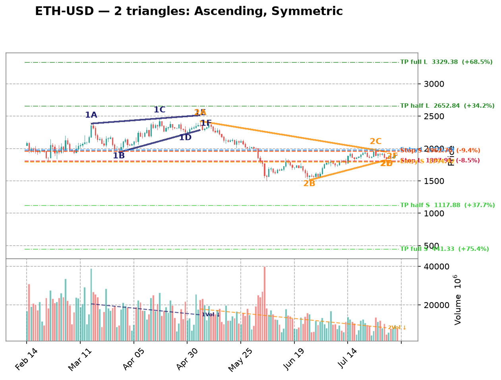
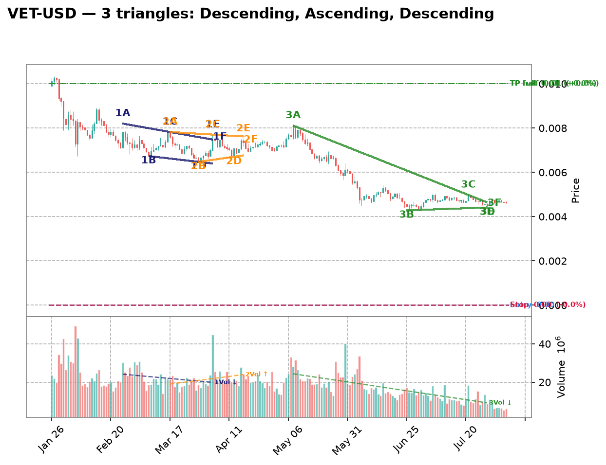
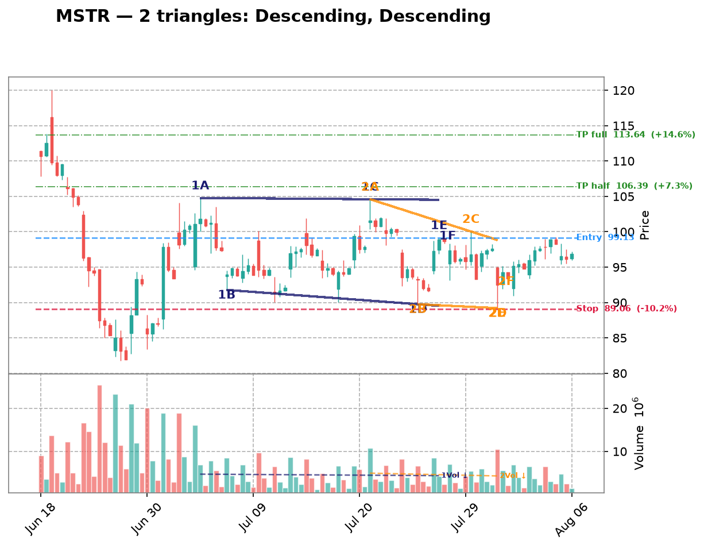
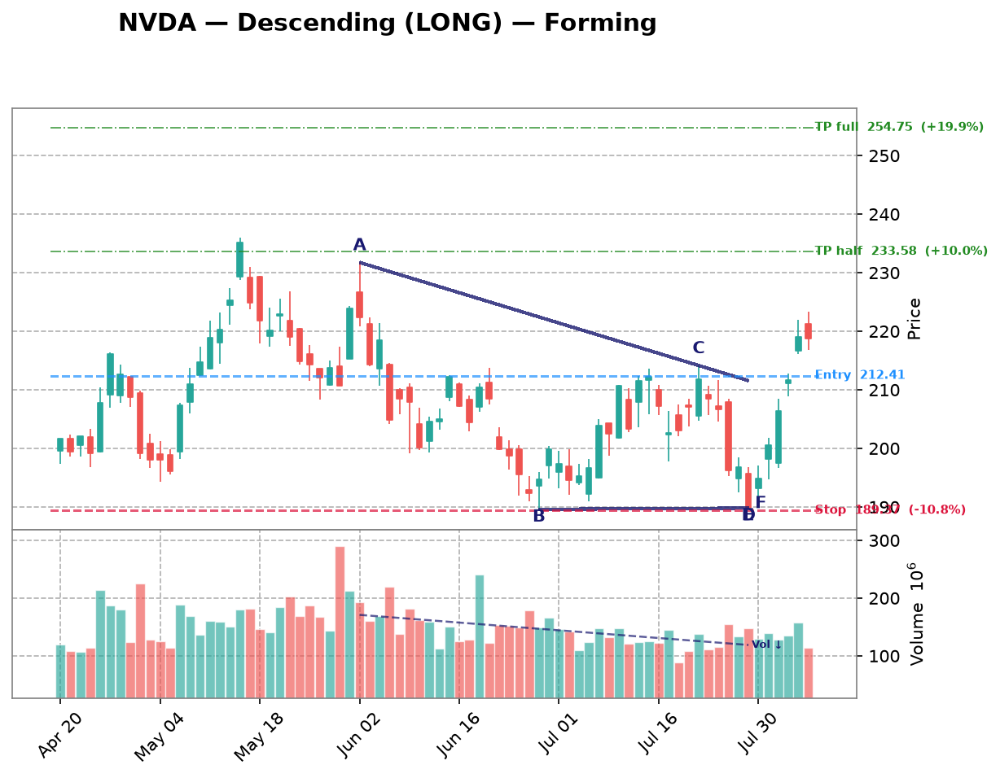
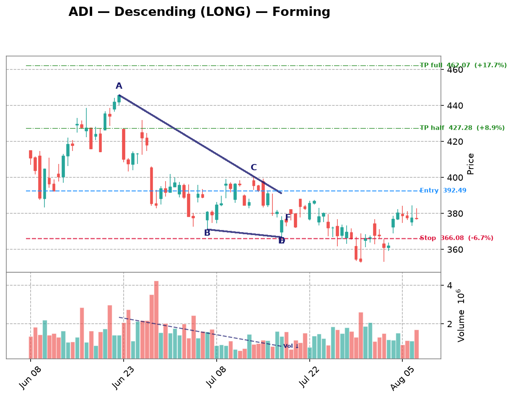
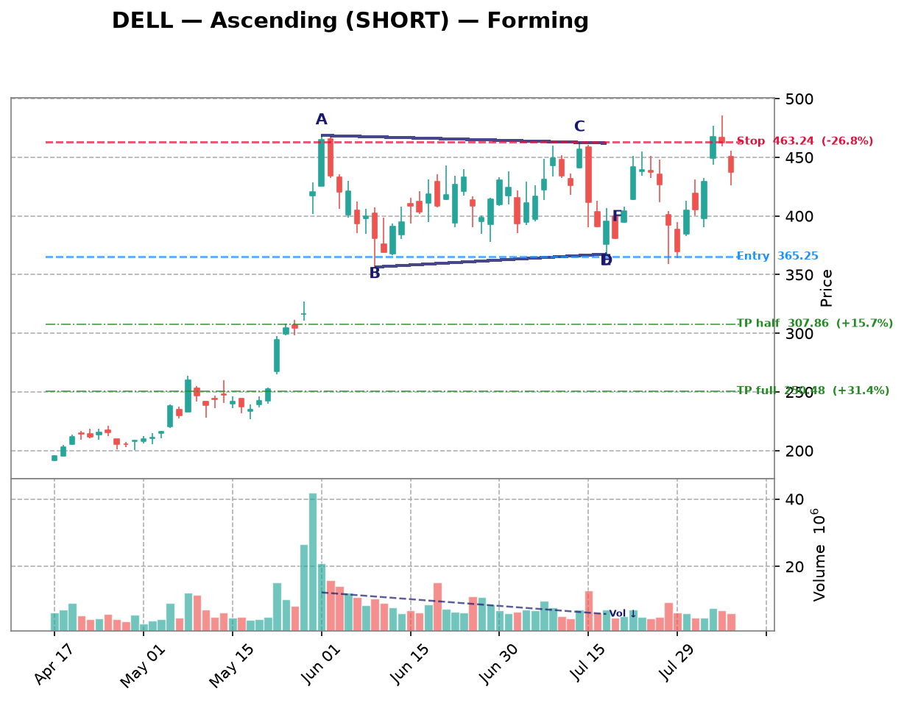

| Date | Symbol | TF | Pattern | Dir | Verdict | Claude Pattern | Claude Dir | Conf | Rec |
|---|---|---|---|---|---|---|---|---|---|
| crypto 10 patterns | |||||||||
| 2026-09-28 | DOGE-USD | 1d | Descending | LONG | Disputed | ? | ? | Certainty: 78 | — |
Chart  Claude Notes The right side of the chart (late June through early August) shows price flattening out around 0.068-0.078 after a sustained downtrend, but this looks like a consolidation/basing range rather than a descending triangle. Highs and lows are both roughly flat and overlapping (0.07-0.078), not showing a clearly declining upper trendline converging into a flat support - both boundaries are nearly horizontal, which is more characteristic of a rectangle/range than a descending triangle. There's no clear series of lower highs compressing toward a flat bottom; the candles are just chopping sideways with low volume. I disagree with the algorithm's descending triangle flag - the structure lacks the diagonal upper resistance line needed to confirm convergence, and it also doesn't show a bullish LONG bias given price just fell hard into this zone. Presence certainty 78/100 — how sure Claude is that its found/not-found call is correct | |||||||||
| 2026-09-28 | ETH-USD | 1d | Symmetric | SYMMETRIC | Disputed | ? | ? | Certainty: 78 | — |
Chart  Claude Notes The right side of the chart (late June through July) shows price recovering from ~1600 lows and consolidating in a fairly flat, choppy range between roughly 1800 and 1950, not a converging wedge. Highs and lows are roughly parallel/flat rather than forming clear convergent trendlines. There's no visible narrowing toward an apex - it looks more like a sideways consolidation/base after a downtrend. I don't see 2+ clean touches on both upper and lower boundaries that are clearly converging; the range is roughly constant width. This doesn't meet the criteria for a credible triangle pattern, so I disagree with the algorithm's symmetric triangle flag. Presence certainty 78/100 — how sure Claude is that its found/not-found call is correct | |||||||||
| 2026-09-28 | XRP-USD | 1d | Descending | LONG | Disputed | ? | ? | Certainty: 75 | — |
Chart  Claude Notes The right side of the chart (June-August) shows a downtrend into a fairly flat, choppy consolidation around 1.0-1.15 rather than a clean descending triangle. Price does not show a clear declining upper resistance line with consistent lower highs converging toward a flat support - instead it looks more like a range-bound/sideways consolidation with roughly equal highs and lows (a rectangle-like structure) after a steep decline. There aren't clean 2-3 touch points forming a distinct converging wedge; volatility looks fairly constant rather than compressing. I don't see strong evidence of an apex forming, so I disagree with the algorithm's descending triangle flag. Presence certainty 75/100 — how sure Claude is that its found/not-found call is correct | |||||||||
| 2026-09-28 | VET-USD | 1d | Descending | LONG | Disputed | ? | ? | Certainty: 72 | — |
Chart  Claude Notes From late June through late July, VET has been trading in a tight horizontal range between roughly 0.0043 and 0.0050 with no clear convergence - both the highs and lows are essentially flat, not narrowing into an apex. This looks like a flat consolidation/rectangle rather than a descending triangle, which requires a distinctly falling upper trendline (lower highs) against a flat support. The recent highs (mid-July ~0.0049, late July ~0.0048) are roughly equal rather than declining, so the 'descending' resistance line the algorithm may have drawn is questionable. There's no strong compression narrowing toward an apex near the right edge - price action looks more like sideways chop after a prior downtrend. I lean toward rejecting the triangle label, though the range is tight enough that a very gentle drift could be argued either way. Presence certainty 72/100 — how sure Claude is that its found/not-found call is correct | |||||||||
| 2026-09-28 | SOL-USD | 1d | Symmetric | SYMMETRIC | Both agree | Symmetric | SYMMETRIC | Quality: 40 | monitor |
Chart  Claude Notes From late June to late July, price declines from a high near 83 to a range around 72-78, with lower highs (83, 78, 77, 75) and a relatively flat/slightly rising lower boundary (72-74). This creates a mild converging wedge near the right edge, but the range is narrow and choppy rather than a crisp textbook triangle - touches are approximate and volume is low/declining, consistent with compression. However, the pattern is closer to a tight consolidation/rectangle than a strong symmetric triangle, so confidence is moderate. Price currently sits near the middle of the range, not clearly broken out yet. Symbol Research SOL-USD is Solana, a high-throughput layer-1 blockchain supporting smart contracts, DeFi, and NFTs. Known for fast/cheap transactions but historically criticized for network outages. Price action is highly correlated with broader crypto market cycles (BTC/ETH beta) and sensitive to network upgrade news, validator activity, and institutional adoption headlines (e.g., ETF speculation). Market Sentiment neutral Presence certainty 55/100 — how sure Claude is that its found/not-found call is correct Pattern quality 40/100 — how clean/tradable this specific triangle is Research confidence 48/100 — Phase B research conviction Supporting Signals
Opposing Signals
| |||||||||
| 2026-09-28 | MANA-USD | 4h | Ascending | SHORT | Disputed | ? | ? | Certainty: 78 | — |
Chart  Claude Notes The right side of the chart shows price consolidating in a tight, roughly flat range between ~0.0655 and ~0.0685 with no clear rising lower support line - lows are essentially flat/choppy rather than forming higher lows. The overall structure since mid-July is a descending staircase (0.0750 -> 0.0700 -> 0.0675) followed by flat consolidation, not a converging ascending triangle. There's no consistent series of higher lows meeting a flat resistance; instead price is oscillating sideways with similar-sized wicks on both sides, more like a range/minor channel than a compressing triangle. I don't see the apex convergence needed to validate the algorithm's ascending triangle call, and no clean breakout structure is visible either. Presence certainty 78/100 — how sure Claude is that its found/not-found call is correct | |||||||||
| 2026-09-28 | SAND-USD | 4h | Descending | LONG | Disputed | ? | ? | Certainty: 78 | — |
Chart  Claude Notes The chart shows a clear, prolonged downtrend from ~0.051 to ~0.041 over most of the timeframe, followed by a period of range-bound consolidation near the right edge (roughly 0.041-0.044) with no clear convergence. Price action in the last ~15 candles is choppy and flat rather than compressing into a triangle - highs and lows are roughly parallel/flat, not narrowing toward an apex. There's no rising support line (rules out ascending) and no clearly converging descending resistance meeting a flat support (the algorithm's descending triangle call doesn't hold up - the recent price action is more of a flat consolidation/small range than a narrowing wedge). I don't see 2+ credible touches on a falling upper trendline converging with a flat lower line in a tradable geometry near the apex. Presence certainty 78/100 — how sure Claude is that its found/not-found call is correct | |||||||||
| 2026-09-28 | XLM-USD | 3h | Descending | LONG | Disputed | ? | ? | Certainty: 85 | — |
Chart  Claude Notes The chart shows a clear downtrend with a series of lower highs and lower lows, not a converging triangle. From mid-July onward price makes descending peaks (~0.195, 0.19, 0.185, 0.18) while the lows also decline steadily (~0.185, 0.18, 0.175, 0.17, 0.16) without any flattening or rising support structure near the right edge. There's no evidence of a flat/rising lower boundary combined with a flat upper resistance - both boundaries are sloping down together, which is more consistent with a persistent downtrend/channel than an ascending triangle. Near the right edge price is still declining with no compression or basing pattern, so the algorithm's ascending-triangle short call doesn't hold up visually - it's simply a downtrend continuation, not a triangle. Presence certainty 85/100 — how sure Claude is that its found/not-found call is correct | |||||||||
| 2026-09-28 | ETC-USD | 3h | Descending | LONG | Disputed | ? | ? | Certainty: 82 | — |
Chart  Claude Notes The right side of the chart shows a clear, steady downtrend with consistently lower highs and lower lows since late July (from ~7.2 down to ~6.4), not a converging structure. There is no flat or rising support line - the lows keep decreasing (6.6, 6.55, 6.5, 6.4, 6.35), which contradicts the 'flat support' requirement of a descending triangle. The recent candles near the apex (Aug 03-05) show minor consolidation around 6.4-6.6 but this is too narrow and short to confirm a triangle with multiple clean touches on both sides. This looks more like a continuation of a downtrend/channel than a genuine descending triangle with a flat floor. I disagree with the algorithm's flag - the support is clearly sloping downward along with resistance, which is more consistent with a bearish channel or just a downtrend rather than a descending triangle. Presence certainty 82/100 — how sure Claude is that its found/not-found call is correct | |||||||||
| 2026-09-28 | VET-USD | 3h | Ascending | SHORT | Disputed | ? | ? | Certainty: 75 | — |
Chart  Claude Notes The right side of the chart shows a choppy sideways range between roughly 0.00463 and 0.00475, with no clear converging trendlines. Highs are not forming a consistent descending line, and lows are flat-to-slightly-declining rather than rising, so there's no ascending triangle structure (which would require higher lows into a flat resistance). Price looks more like consolidation/range-bound noise than a compressing wedge. I disagree with the algorithm's ascending triangle flag - there's no clear rising support line with 2+ higher low touches, and the top isn't well-defined as flat resistance either. Presence certainty 75/100 — how sure Claude is that its found/not-found call is correct | |||||||||
| crypto-equity 5 patterns | |||||||||
| 2026-09-28 | MSTR | 3h | Descending | LONG | Disputed | ? | ? | Certainty: 68 | — |
Chart  Claude Notes From mid-July onward price has been trading in a broad sideways range roughly between 91-95 support and 98-103 resistance, without clear convergence. The highs (Jul 20-24 ~102-103, Jul 29 ~99, Aug 4 ~99) are not forming a consistent descending line, and the lows (Jul 9 ~91, Jul 16 ~90.5, Jul 29 ~89, Aug 1 ~93) are also not rising in a clean stepwise fashion - they're roughly flat to slightly choppy. This looks more like a rectangular consolidation/range than a descending triangle with a falling upper trendline and flat support. There's no visible narrowing of the range near the right edge - the last few candles (Aug 4-6) are still trading in the same 96-99 band seen throughout late July, showing no acceleration toward an apex. I disagree with the algorithm's descending triangle call due to lack of genuine convergence. Presence certainty 68/100 — how sure Claude is that its found/not-found call is correct | |||||||||
| 2026-08-09 | MSTR | 1h | Ascending | SHORT | Disputed | ? | ? | Certainty: 78 | — |
Chart  Claude Notes The right-side price action (late Aug 5 into Aug 6) shows a decline from ~99 to ~96.5 with lower highs and lower lows together — this looks like a mild downtrend/pullback rather than a converging triangle with a rising support line. There's no clear rising trendline of higher lows; instead both highs and lows are declining in tandem, more consistent with a small descending channel or simple retracement than an ascending triangle. No flat resistance line is visible either (highs are dropping from ~99 to ~97.5 to ~97). I don't see the two clearly converging trendlines required for a valid triangle at the right edge, so I disagree with the algorithm's ascending triangle / short flag. Presence certainty 78/100 — how sure Claude is that its found/not-found call is correct | |||||||||
| 2026-08-09 | CIFR | 1h | Descending | LONG | Disputed | ? | ? | Certainty: 78 | — |
Chart  Claude Notes The chart shows a series of large swing oscillations (roughly 26->18->24->17->26->18->25->18) rather than a converging structure. Each swing has similar amplitude, indicating a broad trading range/downtrend with volatility rather than a narrowing triangle. Near the right edge, price is declining from ~25 to ~18-19 with no flattening support line or clear lower highs converging into an apex - the recent candles show a steady downward slide, not compression. There is no consistent horizontal support with descending highs; the swings are too wide and repetitive to qualify as a descending triangle. I disagree with the algorithm's flag - this looks like continued range-bound/down-trending price action, not a triangle nearing apex. Presence certainty 78/100 — how sure Claude is that its found/not-found call is correct | |||||||||
| 2026-08-09 | MARA | 1h | Descending | LONG | Disputed | ? | ? | Certainty: 78 | — |
Chart  Claude Notes {
"found_triangle": false,
"pattern_type": null,
"direction": null,
"presence_confidence": 78,
"pattern_quality": null,
"notes": "The chart shows an overall downtrend with successive lower highs (15, 14, 13, 12.7, 12) and lower lows (12, 11.8, 10.7, 10, 10.7), forming a descending staircase rather than a converging triangle. There's no flat/horizontal support line - the lows are also declining, not holding at a consistent level. At the right edge, price is consolidating in a tight range around 10.7-12 but without clear evidence of a rising lower boundary or flat lower support meeting a descending upper trendline with 3+ touches each. This looks more like a broader downtrend with intermittent consolidation than a well-defined descending triangle. The algorithm's flag is plausible given the recent narrowing range, but the lower boundary isn't flat - it's still sloping down, making this more consistent with a bearish channel/flag than a classic descending triangle setup for a LONG bias, which would typically need a firm horizontal support.",
} Presence certainty 78/100 — how sure Claude is that its found/not-found call is correct | |||||||||
| 2026-08-09 | IREN | 1h | Symmetric | SYMMETRIC | Disputed | ? | ? | Certainty: 72 | — |
Chart  Claude Notes The chart shows a broad downtrend from late June (~57) into a choppy bottoming/ranging structure from mid-July through early August, oscillating between roughly 30 and 44 with multiple swing highs and lows of similar magnitude - more like a wide horizontal range than a converging wedge. Near the right edge (early August), price is bouncing between ~37-41 without clear narrowing of highs and lows; recent candles show similar range width to prior weeks rather than compression toward an apex. I don't see two clearly converging trendlines with consistent touch points - the swing highs (44, 43, 41) and lows (33, 30, 36) don't form a tight symmetric convergence, they look more like a rounded/ranging base. I disagree with the algorithmic flag; this looks more like consolidation/basing after a downtrend rather than a well-defined symmetric triangle. Presence certainty 72/100 — how sure Claude is that its found/not-found call is correct | |||||||||
| mega-cap 4 patterns | |||||||||
| 2026-09-28 | AMZN | 1d | Descending | LONG | Disputed | ? | ? | Certainty: 80 | — |
Chart  Claude Notes The chart shows a broad rounded decline from late April into late June (roughly 280 down to 228), then a recovery back to ~270-280 by early August, followed by a sharp pullback in the last 4-5 candles (280 -> 273). This is not a triangle - there's no clear consolidation with converging trendlines near the right edge. Instead the last segment looks like a sharp spike up followed by a small pullback/retracement, i.e. a potential flag or just profit-taking after a rally. There are only 2-3 candles at the recent highs, not enough touches to define a flat resistance or rising support line. The algorithm's 'descending triangle' label doesn't fit since there's no flat support - price action at the right edge is a retracement from a rally, not a basing/compression pattern. I don't see two clearly converging trendlines with multiple touches, so I reject the triangle call. Presence certainty 80/100 — how sure Claude is that its found/not-found call is correct | |||||||||
| 2026-09-28 | NVDA | 1d | Descending | LONG | Disputed | ? | ? | Certainty: 80 | — |
Chart  Claude Notes The right side of the chart shows a sharp, strong rally from ~190 to ~223 over the last several candles, not a compressing triangle. There's no flat support with lower highs converging - instead price broke out of the prior consolidation range (roughly 195-215 seen from mid-June to late-July) and is now trending strongly upward with expanding range, not narrowing. No clear descending upper trendline with 2+ touches is visible near the apex; the recent candles are making higher highs and higher lows, which contradicts a descending triangle structure. This looks like a breakout/impulsive move rather than an active triangle formation. Presence certainty 80/100 — how sure Claude is that its found/not-found call is correct | |||||||||
| 2026-09-28 | META | 1d | Descending | LONG | Disputed | ? | ? | Certainty: 68 | — |
Chart  Claude Notes The right side of the chart shows a choppy trading range roughly between 585-690 with no clear convergence. Price made a low around 525-540 in late July, bounced to ~635, then pulled back to ~585-600 - this looks like volatile consolidation/whipsaw rather than a clean descending triangle. There's no consistent flat support line (lows vary from 525 to 600) nor a clearly defined descending resistance line with multiple touches. The algorithm may be picking up on the general downward drift of highs from ~690 to ~630, but the lower boundary is not flat/level - it's actually more volatile with a sharp spike down to 525. This looks more like range-bound noise or a falling wedge attempt without clean touch points, so I don't see credible triangle containment forming near the apex. Presence certainty 68/100 — how sure Claude is that its found/not-found call is correct | |||||||||
| 2026-09-28 | GOOGL | 4h | Ascending | SHORT | Disputed | ? | ? | Certainty: 85 | — |
Chart  Claude Notes The right side shows a strong uptrend from ~320 to a peak of ~382, followed by a sharp pullback to ~357-365 over the last few candles. There's no evidence of converging trendlines or compression - instead this looks like a strong impulsive rally followed by a corrective pullback. There are not two clear touch points forming a rising support line and a flat/declining resistance line; the 'highs' near 375-382 are simply the peak of the rally, not a resistance being tested multiple times. The recent decline also doesn't show consolidation between narrowing boundaries. This appears to be a post-rally pullback/reversal rather than an ascending triangle, so I disagree with the algorithm's flag. Presence certainty 85/100 — how sure Claude is that its found/not-found call is correct | |||||||||
| semiconductors 3 patterns | |||||||||
| 2026-09-28 | ADI | 4h | Descending | LONG | Disputed | ? | ? | Certainty: 75 | — |
Chart  Claude Notes The chart shows a clear downtrend from late June (~440) into late July (~355), followed by a modest recovery/basing pattern near the right edge (~360-385). There isn't a well-defined descending triangle: the lows from mid-July to early August (395, 383, 375, 355, 362) don't form a flat support line, and the highs (400, 390, 380, 385) are also irregular rather than cleanly descending. The last few candles (Aug 01-05) show price consolidating in a tight range around 375-385 with relatively flat highs and lows, more resembling a small rectangle/consolidation than a converging triangle. There's no clear apex or narrowing wedge visible - price action near the right edge looks like sideways consolidation after a downtrend, not a triangle breakout setup. I disagree with the algorithm's descending triangle call because the resistance line isn't clearly declining and there aren't enough clean touch points forming a genuine convergence pattern. Presence certainty 75/100 — how sure Claude is that its found/not-found call is correct | |||||||||
| 2026-08-09 | LRCX | 1h | Ascending | SHORT | Disputed | ? | ? | Certainty: 72 | — |
Chart  Claude Notes The right-side price action (early Aug) shows a choppy range between roughly 305-320, but there's no clear ascending support line—lows are flat/noisy (around 305-308) rather than making distinct higher lows, and the highs are also roughly flat (~315-320) rather than converging. This looks more like a horizontal consolidation/rectangle than a true ascending triangle. The algorithm likely flagged minor higher-low bumps, but there aren't 2-3 clean touch points forming a rising trendline distinct from a flat one. Prior to this, price action from mid-July was a clear downtrend with lower highs/lower lows, not a triangle. Given the ambiguity of the recent consolidation, I lean toward rejecting the triangle call, though a loose case for a shallow ascending structure isn't impossible. Presence certainty 72/100 — how sure Claude is that its found/not-found call is correct | |||||||||
| 2026-08-09 | AMAT | 1h | Symmetric | SYMMETRIC | Disputed | ? | ? | Certainty: 72 | — |
Chart  Claude Notes The right side of the chart shows a rally from ~500 to ~555 followed by a pullback to ~530, but this looks like a rounded top / pullback within a broader swing rather than a converging triangle. There's no clear sequence of lower highs meeting higher lows - the recent candles (Aug 03-08) show a peak around 555 then a fairly sharp drop to 530, which is more consistent with a short-term downtrend or consolidation than a symmetric wedge. I don't see at least two clean, roughly parallel converging trendlines with multiple touches on each side near the apex. The algorithm may be reacting to the general narrowing of range after the spike, but the touch points are too few and inconsistent to confirm a genuine symmetric triangle. Presence certainty 72/100 — how sure Claude is that its found/not-found call is correct | |||||||||
| forex 2 patterns | |||||||||
| 2026-08-09 | EURUSD=X | 1h | Ascending | SHORT | Disputed | ? | ? | Certainty: 82 | — |
Chart  Claude Notes The right side of the chart shows a clear downtrend from the Aug 5 peak (~1.156) into Aug 6, with lower highs and lower lows in a fairly consistent decline, followed by a flattening/consolidation near 1.1525-1.153. There's no clear rising support line with higher lows to form an ascending triangle - instead price dropped sharply and is now consolidating in a narrow range without a defined converging structure. The algorithm's ascending triangle call doesn't fit since there's no series of higher lows visible; the recent price action looks more like a sharp decline stabilizing at a new lower level rather than a triangle compression. Not enough touch points on both an upper and lower trendline to confirm any triangle pattern near the apex on the right edge. Presence certainty 82/100 — how sure Claude is that its found/not-found call is correct | |||||||||
| 2026-08-09 | NZDUSD=X | 1h | Ascending | SHORT | Disputed | ? | ? | Certainty: 78 | — |
Chart  Claude Notes The right side of the chart shows price consolidating in a choppy range between ~0.5865 and ~0.590 after a strong impulsive rally from late July. However, this looks more like a flat/rectangular consolidation than an ascending triangle - the highs are roughly flat (~0.590) but the lows are also fairly flat/choppy (~0.5865-0.587), not showing a clear rising sequence of higher lows. There's no clean converging trendline structure - both boundaries appear roughly horizontal rather than one flat and one rising. This resembles sideways consolidation or a minor pullback/flag after the breakout rather than a textbook ascending triangle with rising support. The algorithm's flag seems to be picking up on the tightening range but the specific 'rising lower trendline' criterion for ascending triangle isn't clearly satisfied here. Presence certainty 78/100 — how sure Claude is that its found/not-found call is correct | |||||||||
| hardware 2 patterns | |||||||||
| 2026-09-28 | DELL | 1d | Ascending | SHORT | Disputed | ? | ? | Certainty: 75 | — |
Chart  Claude Notes The right side of the chart shows a choppy trading range between roughly 370 and 470 with no clear convergence. Highs are not forming a consistent flat resistance and lows are not forming a clean rising trendline — the swings (e.g., mid-July high near 460, then pullback to ~380, then rally to ~485) look more like a wide, noisy consolidation/channel than a converging triangle. There isn't a clear narrowing of range as price approaches the recent bars; volatility looks similar or even wider than earlier in the range. I don't see a credible ascending triangle structure here, so I disagree with the algorithm's flag. Presence certainty 75/100 — how sure Claude is that its found/not-found call is correct | |||||||||
| 2026-08-09 | STX | 1h | Descending | LONG | Disputed | ? | ? | Certainty: 72 | — |
Chart  Claude Notes The right-side price action (Aug 03–06) shows a choppy, roughly flat range between ~815 and ~890 with no clear convergence — highs and lows are similarly spaced throughout rather than narrowing toward an apex. There's a sharp downside wick near Aug 06 breaking below the recent range low (~780), which argues against a clean descending triangle setup (support was violated, not respected). I don't see a consistent flat support line with lower highs converging into it; instead it looks like sideways consolidation/noise with one outlier spike down. Not enough clean touch points on both a flat lower line and a descending upper line to call this a credible descending triangle. Presence certainty 72/100 — how sure Claude is that its found/not-found call is correct | |||||||||
| space 2 patterns | |||||||||
| 2026-09-28 | GSAT | 1d | Descending | LONG | Disputed | ? | ? | Certainty: 85 | — |
Chart  Claude Notes The chart shows a broad decline from ~85 (late May) to ~79 (late July), followed by a sharp gap-up breakout to ~84 in early August with a large green candle and elevated volume. There's no clear converging structure with two trendlines meeting at an apex — instead price trended down steadily then broke out abruptly. The recent 3-4 candles near the right edge show minor consolidation around 83-84, but this is too short and lacks the multiple touch points needed to confirm a descending triangle. The algorithm likely mistook the downtrend into late July as a descending triangle, but there's no flat support line being repeatedly tested - lows kept declining without a clear floor. This looks like a completed downtrend followed by a breakout, not an active triangle formation. Presence certainty 85/100 — how sure Claude is that its found/not-found call is correct | |||||||||
| 2026-09-28 | SPCE | 4h | Descending | LONG | Disputed | ? | ? | Certainty: 68 | — |
Chart  Claude Notes After the sharp June decline, price has been flat-lining in a tight range roughly between 2.5 and 3.0 since early July, with a slight uptick at the very end (late July-Aug). This looks more like a basing/consolidation range or a slight ascending drift than a descending triangle with lower highs. There isn't a clear descending upper trendline - highs are fairly level around 2.9-3.0, not declining. The recent breakout to ~2.9-3.0 with higher lows suggests if anything a mild ascending bias, but the range is too flat and choppy to confidently call a clean triangle. I disagree with the descending triangle label since the upper boundary isn't sloping down - it's flat, and the recent price action (last 10 candles) shows a push above the prior range, which looks like a breakout/basing rather than compression into an apex. Presence certainty 68/100 — how sure Claude is that its found/not-found call is correct | |||||||||
| adtech 1 pattern | |||||||||
| 2026-09-28 | U | 1d | Ascending | SHORT | Disputed | ? | ? | Certainty: 88 | — |
Chart  Claude Notes The chart shows a clear uptrend since mid-June with a strong breakout in the final few candles, culminating in a large green candle and a volume spike to ~40M. There's no evidence of a converging triangle near the right edge - instead price has already broken out sharply to the upside with expanding range, not compressing range. An ascending triangle requires a flat resistance line being tested multiple times with rising lows beneath it; here there's no flat ceiling being repeatedly tested - price simply grinds up and then explodes higher. This looks like a breakout/momentum move, not a pattern still forming into an apex. I disagree with the algorithm's flag. Presence certainty 88/100 — how sure Claude is that its found/not-found call is correct | |||||||||
| commodities 1 pattern | |||||||||
| 2026-09-28 | NEM | 4h | Descending | LONG | Disputed | ? | ? | Certainty: 80 | — |
Chart Claude Notes The chart shows a clear downtrend from mid-June (~112) bottoming near 90 around Jul 17-19, followed by a recovery/uptrend into early August (currently ~105). This is a V-shaped reversal, not a converging triangle. There's no clear flat support with lower highs converging - rather a broad decline followed by a broad rally with normal volatility swings. The recent candles near the right edge (Jul 27-Aug 06) show a small basing/consolidation with higher lows, but there isn't a corresponding descending upper trendline with multiple touches - highs are choppy, not clearly declining in a converging manner. This looks more like a rounded bottom/reversal structure than a descending triangle, and price has already broken upward out of any consolidation, not compressing at an apex. I disagree with the algorithm's descending triangle call - the overall shape is a large V-reversal, and the recent price action shows an uptrend continuation, not compression into a breakout point. Presence certainty 80/100 — how sure Claude is that its found/not-found call is correct | |||||||||
| fintech 1 pattern | |||||||||
| 2026-09-28 | SOFI | 1d | Descending | LONG | Disputed | ? | ? | Certainty: 75 | — |
Chart  Claude Notes The right side of the chart shows a sharp decline into late July (drop to ~15) followed by a strong V-shaped reversal and rally to ~18.5, with a pullback. This is a sharp reversal/spike pattern, not a converging triangle. There's no clear flat support or descending resistance line with multiple touchpoints forming a compression structure - instead we see a volume spike (capitulation) followed by immediate strong bullish recovery. The prior months show broad choppy swings (Mar-Jul) but no consistent narrowing range near the right edge. I disagree with the algorithm's descending triangle flag; the recent price action looks more like a V-bottom reversal than triangle consolidation. Presence certainty 75/100 — how sure Claude is that its found/not-found call is correct | |||||||||
| industrials 1 pattern | |||||||||
| 2026-08-09 | RCL | 1h | Ascending | SHORT | Disputed | ? | ? | Certainty: 80 | — |
Chart  Claude Notes The right side of the chart shows price oscillating in a fairly flat range between ~318 and ~330 after a strong impulsive rally from late July. There's no clear rising lower support line - the recent lows (~320-322) are roughly flat or even slightly declining, not making higher lows as required for an ascending triangle. The highs are also roughly flat (~328-330) rather than converging with the lows. This looks more like a consolidation/range or minor pullback after a strong uptrend rather than a converging triangle. I don't see two clear trendlines converging toward an apex - the pattern lacks the compression structure needed. Disagreeing with the algorithm's ascending triangle flag; the structure is closer to a flat consolidation/rectangle than a triangle with rising support. Presence certainty 80/100 — how sure Claude is that its found/not-found call is correct | |||||||||
| internet 1 pattern | |||||||||
| 2026-09-28 | SNAP | 1d | Descending | LONG | Disputed | ? | ? | Certainty: 80 | — |
Chart  Claude Notes The chart shows a broad downtrend from late April into mid-June, followed by a choppy basing/consolidation period (mid-June through late July) with fairly flat, overlapping candles around 4.4-4.9, and then a sharp breakout/gap up in early August. There's no clear descending triangle structure - the lower support in the consolidation zone is essentially flat (~4.4-4.5) rather than showing a rising lower support, and the upper boundary isn't cleanly declining either; it's more of a flat range/base. The recent 2-3 candles at the right edge show a strong impulsive move up and then pullback, which looks like a post-breakout retracement rather than a triangle still compressing toward an apex. I don't see clean, repeated touches forming two converging trendlines near the right edge - it looks more like a completed base and breakout, so I disagree with the algorithm's descending triangle flag. Presence certainty 80/100 — how sure Claude is that its found/not-found call is correct | |||||||||